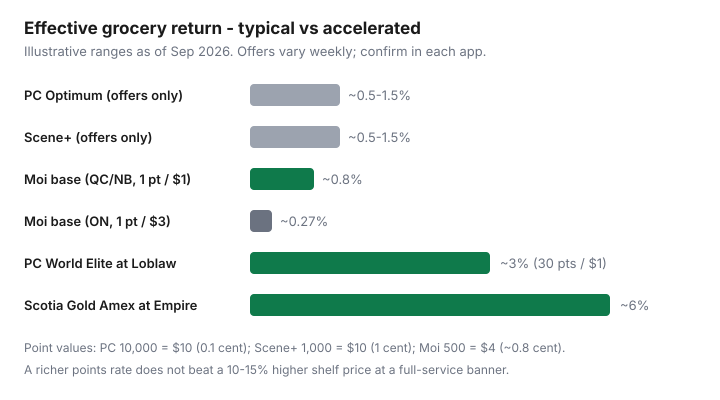

Food & Groceries · Canada
PC Optimum vs Scene+ vs Moi: which grocery loyalty program is worth your time?
Shoppers chase points at pretty banners and lose more on the sticker than they earn in rewards. A typical unboosted grocery offer stack is only about 0.5–1.5%. That is real money on a big cart and still smaller than the gap between a discounter and a full-service store on the same oats.
This is a 2026 Canada comparison of PC Optimum, Scene+, and Moi — including Moi’s Ontario versus Quebec/New Brunswick earn split and Scene+’s travel and entertainment burn options. Map programs to the stores near you first. Then decide whether a co-branded card is worth the extra plastic.
Disclosure: PC Financial Mastercards, Scotiabank Scene+ cards, the moi RBC Visa, and cashback portals are offer types. Saving Optimizer may earn a commission if we later add partner links. We do not currently claim card-issuer partnerships. Compare applications on the issuer’s site, and never carry a balance for points.
Key takeaways
- Pick the program that matches your discount banner. Do not migrate your whole cart for a points hobby.
- PC and Scene+ are mostly offers-only on groceries. Moi is the one with a published base earn — and it is weaker in Ontario than in Quebec or New Brunswick.
- Redemption values (typical): PC 10,000 = $10; Scene+ 1,000 = $10; Moi 500 = $4 (~0.8¢).
- Credit-card accelerators change the math only where the card is accepted (Loblaw banners often do not take Amex).
- Cheaper shelf prices beat richer points. Run a discounter first.
Map programs to banners near you first
Canada’s grocery aisle is three empires plus independents and Walmart. Loyalty is a wrapper on those empires:
- PC Optimum: No Frills, Real Canadian Superstore, Loblaws, Zehrs, Fortinos, Independent, Maxi, Provigo, Valu-Mart, Shoppers Drug Mart / Pharmaprix, Esso and Mobil for points burn/earn in many provinces.
- Scene+: Sobeys, Safeway, FreshCo, Foodland, IGA, Thrifty Foods, plus Cineplex, many restaurants, travel, and (for some members) transfer options such as Aeroplan — confirm in the Scene+ app.
- Moi: Metro, Jean Coutu, Brunet, Première Moisson; Super C and Food Basics are more limited (often offers rather than full base earn).
If your closest cheap store is a No Frills, you are a PC household. If it is a FreshCo, you are Scene+. If it is Food Basics or Metro, you are Moi. Western households should also check Save-On More Rewards before assuming one of these three owns the West.
Earn mechanics: offers-only vs base earn (Moi)
PC Optimum and Scene+ generally do not pay a flat percent on every grocery dollar for free members. You load weekly and personalized offers. Skip the load, earn close to nothing. That is why the Sunday three-minute load in the weekly system exists.
Moi is the odd one out: a published base earn at participating Metro banners, with a provincial split that Ratehub and other 2026 explainers describe as 1 point per $1 in Quebec and New Brunswick versus 1 point per $3 at Metro in Ontario. Food Basics is widely described as promotional items only. Always confirm in-app — Metro can change this.
Point values and redemption flexibility compared
| PC Optimum | Scene+ | Moi | |
|---|---|---|---|
| Grocery earn (free member) | Offers / events | Offers / events | Base + offers (provincial rates) |
| Stated grocery redemption | 10,000 pts = $10 | 1,000 pts = $10 | 500 pts = $4, then 125 pts ≈ $1 |
| ¢ per point (grocery) | 0.1¢ | 1¢ | ~0.8¢ |
| Best extra burn | Shoppers bonus events; Esso | Travel, Cineplex, dining, some transfers | Jean Coutu / Metro family |
| Trap | Statement credit can pay less than store redemption | Travel FOMO vs grocery $ | Ontario base earn is thin |
Worked example (estimate): $200 grocery week, no co-branded card. A decent PC or Scene+ offer week might return $1–$3. Moi in Quebec on $200 at Metro is about $1.60 at 0.8¢ per point if every dollar earned (200 × 0.8¢). Moi in Ontario at 1 point per $3 is about 67 points → roughly $0.54. Offers can beat that. The shelf price at Food Basics versus Metro will usually matter more than 54 cents.

Credit card accelerators that change the math
Co-branded cards are how 1% becomes 3–6% — on the banners that take the network.
- PC Financial World Elite Mastercard (no annual fee, typical 2026 explainers): about 30 PC points per $1 at Loblaw grocery banners (~3%) and 45 at Shoppers (~4.5%) when redeemed at 10,000 = $10. Other PC cards pay less. Confirm the current schedule on PC Financial’s site.
- Scotiabank Gold American Express (annual fee — often $120): Scene+ accelerators commonly quoted as 6 points per $1 at Empire grocery and 5× at other eligible grocery, with category caps. Useless at many Loblaw banners that do not take Amex.
- moi RBC Visa (no annual fee): marketed as extra Moi points at participating Metro / Jean Coutu banners. Ontario’s slower base earn still applies to the in-store portion — Ratehub has walked through the blended 1.33-points-per-dollar style math. Read the current card page.
Decision tree by banner lives in best credit cards for Canadian groceries. The non-negotiable rule is the same: pay in full.
When cheaper shelf prices beat richer points
If Metro is 15% more than Food Basics on your staple list, Moi’s 0.8% cannot close the gap. If Loblaws is prettier than No Frills, PC points cannot close that gap either. Use points as a rebate on the store you should shop anyway. Full-service banners win for a specific cut of meat, a pharmacy stop, or a time crunch — not for oats.
Running two programs without point FOMO
Two programs is normal in a city with both a No Frills and a FreshCo. Load both on Sunday. Shop one store that week. Let the other balance sit. Redeem grocery points at a threshold that actually changes a bill (for PC, many households wait for a Shoppers bonus event; for Scene+, grocery $10 increments are simple). Do not invent a third trip to “keep offers from expiring” if the offer is $0.40 on crackers.
Provincial quirks (Moi ON vs QC/NB)
Ontario Moi is a different product than Quebec Moi. If you live in Ottawa and shop Gatineau, read the till rules rather than assuming one earn rate. New Brunswick follows the richer Metro earn in public explainers. Atlantic Sobeys banners are Scene+ country. Quebec discounters (Maxi, Super C) pair with PC and Moi respectively — Maxi is a PC Optimum banner; Super C is Metro’s discounter with thinner Moi earn.
Decision framework checklist
- Which discount banner is within 15 minutes?
- Join that one loyalty program. Load offers every Sunday.
- If you already pay a card annual fee for travel, check whether it also codes grocery at that banner.
- If you are a Loblaw-heavy household and want a no-fee accelerator, look at PC Financial’s current Mastercard ladder — not Amex.
- If Scene+ travel is how you already holiday, Empire banners plus a Scene+ card can be one currency. Still do not pay Sobeys prices for no name beans.
- Revisit once a year. Air Miles remnants, Blue Rewards, and More Rewards are regional footnotes that change.
Sources & date stamps
- Ratehub, “Canada’s grocery programs compared: PC Optimum, Scene+, Moi Rewards” (2026 public comparison — point values and Moi provincial rates).
- Issuer and program pages for PC Optimum, Scene+, and Moi (earn/burn; confirm before applying for cards).
- Milesopedia / NerdWallet Canada grocery-card roundups (Aug–Sep 2026) for accelerator ranges — not official issuer disclosures.
Frequently asked questions
Which Canadian grocery loyalty program is best?
The one that matches the discount banner you already use. PC Optimum for Loblaw banners, Scene+ for Empire banners, Moi for Metro. Switching stores for a richer headline rate is how people overpay on the shelf.
Does Moi earn the same in Ontario and Quebec?
No. Public program explainers in 2026 describe 1 Moi point per $1 at participating stores in Quebec and New Brunswick, versus 1 point per $3 at Metro in Ontario. Food Basics is generally offers-only. Confirm current rates in the Moi app.
How much is a PC Optimum point worth?
At grocery banners the common redemption is 10,000 points = $10 (0.1¢ per point). Shoppers bonus redemption events can raise that. Statement-credit redemptions on PC Financial cards can be worse — read the current terms.
Should I collect two programs?
Yes if you already split shops between two banner families. No if the second program is an excuse to visit a more expensive store. Points FOMO is a cost.
Do points beat a cheaper discounter?
Usually no. A 10–15% higher shelf price swamps a 1% offer or even a 3% co-branded card. Run the shelf first, points second.